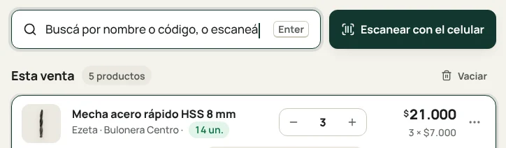
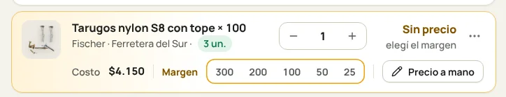

Vender Capítulo 3
Cobrar una venta
Sumá lo que lleva el cliente, elegí cómo paga y tocá «Cobrar». Si el cliente espera, se hace en menos de un minuto y con el teclado solo.
Buscá lo que lleva
Escribí el nombre, la marca o el código en la caja de arriba 1, o pasá el producto por el lector. Enter lo suma a la venta. Si el lector no lo lee, tocá «Escanear con el celular» 2.

1 2Revisá cantidades y precios
Con − y + cambiás la cantidad. Si un producto dice «Sin precio», elegí el margen con las teclas 1 a 5 o tocá «Precio a mano».

1